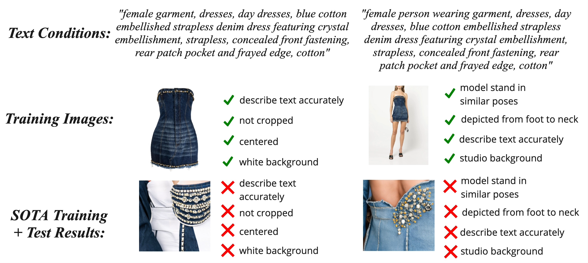
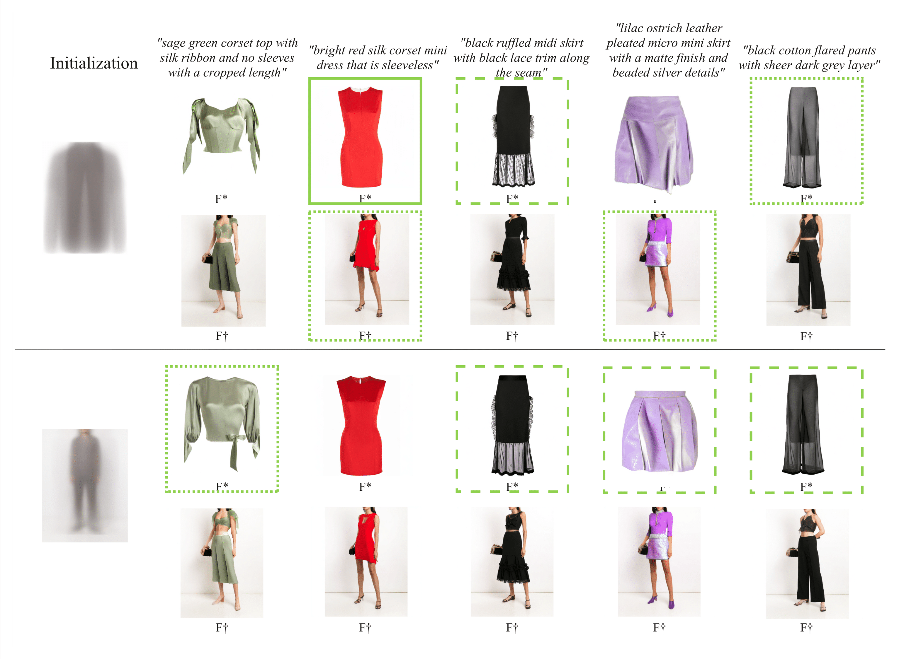

Preserving Image Properties Through Initializations in Diffusion Models
WACV 2024
- 1 Revery AI Inc.
- 2 University of Illinois at Urbana-Champaign
Abstract
Retail photography imposes specific requirements on images. For instance, images may need uniform background colors, consistent model poses, centered products, and consistent lighting. Minor deviations from these standards impact a site’s aesthetic appeal, making the images unsuitable for use. We show that Stable Diffusion methods, as currently applied, do not respect these requirements. The usual practice of training the denoiser with a very noisy image and starting inference with a sample of pure noise leads to inconsistent generated images during inference. This inconsistency occurs because it is easy to tell the difference between samples of the training and inference distributions. As a result, a network trained with centered retail product images with uniform backgrounds generates images with erratic backgrounds. The problem is easily fixed by initializing inference with samples from an approximation of noisy images. However, in using such an approximation, the joint distribution of text and noisy image at inference time still slightly differs from that at training time. This discrepancy is corrected by training the network with samples from the approximate noisy image distribution. Extensive experiments on real application data show significant qualitative and quantitative improvements in performance from adopting these procedures. Finally, our procedure can interact well with other control-based methods to further enhance the controllability of diffusion-based methods.
Video
Overview
Training Dataset
We collect over a million image pairs of retailer garment, garment on model, and garment text description triplets. We are given one text prompt corresponding to a garment image and a model wearing that garment.
PCA-K Offset Training + Inference
We train a tri-modal model, which we call ViML for Video to Music with Language. The model fuses text and video input representations to query music samples.
We rely on per-modality Transformer encoders to encode sequences of features from base encoders (CLIP and DeepSim) and a fusion model to combine the video and text encodings. For training, we introduce a text dropout regularization mechanism which we show is critical to model performance.
Results
Qualitatively, Mean Offset Training and Mean Offset Inference provides better text control because the relationship between initialization and text is preserved during training and inference.

DDIM Training + Mean Offset Inference |

Mean Offset Training + Inference (Ours) |
|---|
Application to ControlNet
We apply our method to ControlNet for the task of virtual try-on using our dataset. We mask out the region of a garment from the person and adapt ControlNet to take the masked garment image as the condition.

Citation
Website template credit: Michaël Gharbi and Jon Barron